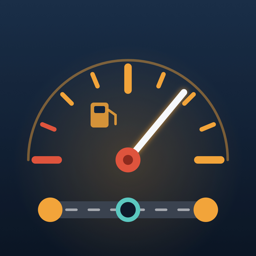

満タンでなくても分かる燃費
継ぎ足しの給油も、燃料計の針で見込み。iPhone と iPad のアプリです。
車・バイクの燃費の記録です。給油のたびに「満タン」か「継ぎ足し」を選びます。継ぎ足しの給油は、次の満タンまでの区間にまとめて、本当の燃費を出します（満タン法）。毎回満タンにしなくてもかまいません。
- 継ぎ足しのときは、給油のあとの燃料計の針の位置を、メーターの絵の針を指で動かして入れます。タンクの大きさと針の位置から、次の満タンを待たずに「見込みの燃費」を出します。次に満タンにすると、本当の燃費に置き換わります
- 満タンから満タンまでの区間を、道の帯と点（満タンは塗った点、継ぎ足しは白抜きの点）で並べます
- メーターの距離・入れた量（小数も）・お金（合計か 1L の単価）を入れます。あとから直せます。入れ忘れた給油があった区間は、燃費を出しません
- 平均燃費・1km あたりのガソリン代・月ごとのガソリン代・区間ごとの燃費のグラフ
- オイル交換などの「あと◯km」。車・バイクは何台でも。CSV で書き出せます
- 登録・課金・通知はありません。記録はこの端末の中だけに保存します。画面のいちばん下に小さな広告が出ます（画面いっぱいの広告・動画の広告は出さず、広告の音は消しています）